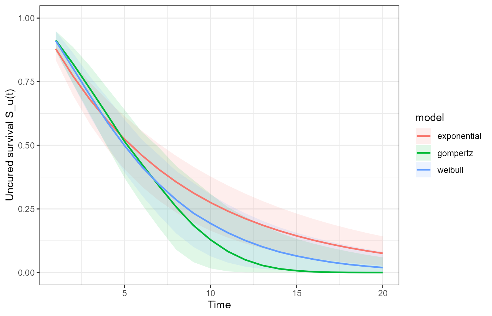

2. Imperfect Diagnostic Tests, Latent-Class Coupling, and Subgroup Cohorts
Source:vignettes/imperfect-tests-and-coupling.Rmd
imperfect-tests-and-coupling.RmdOverview
LTBI diagnostic tests—such as interferon-gamma release assays (IGRA: QuantiFERON, T-SPOT.TB) and the tuberculin skin test (TST)—have imperfect sensitivity and specificity. Furthermore, clinical cohorts differ in how diagnostic test results and active TB progression follow-up are structured:
-
Population-Level vs. Individual-Level Latent-Class Coupling
(
coupling): Whether we only link population-level prevalence \(\pi\) across modules, or jointly marginalize over each individual’s latent infection status \(Z_i \in \{0, 1\}\) across their baseline test result(s) \(\mathbf{x}_i\) and progression outcome \((t_i, d_i)\). - Single vs. Multiple Diagnostic Tests (\(K \ge 1\)): Combining \(K = 2\) tests (e.g., IGRA + TST) on the same individuals provides conditional latent-class information about sensitivity, specificity, and prevalence.
-
All-Comers vs. Test-Positive Follow-Up
(
cohort_type): When only test-positive individuals (\(X_{i,1} = 1\)) are followed for progression, false positives cannot progress to active TB, so the uncured fraction is the Positive Predictive Value (\(\text{PPV}\)) rather than the population prevalence \(\pi\). -
Covariates & Parametric Survival Families
(
covariates,surv_dist): Adjusting prevalence by baseline risk factors and comparing Gompertz, Weibull, and Exponential progression hazards.
Mathematical Formulation
1. Imperfect Diagnostic Tests (\(K \ge 1\)) and Covariates
Let \(Z_i \in \{0, 1\}\) denote true baseline LTBI status for individual \(i\), with covariate-adjusted prevalence:
\[ P(Z_i = 1) = \pi_i = \text{logit}^{-1}(\eta_i), \qquad \eta_i = \alpha + \mathbf{x}_{\text{cov}, i}^\top \boldsymbol{\beta}. \]
Suppose individual \(i\) undergoes \(K \ge 1\) diagnostic tests \(\mathbf{X}_i = (X_{i,1}, \dots, X_{i,K})\) with sensitivities \(\text{sens}_k = P(X_{i,k} = 1 \mid Z_i = 1)\) and specificities \(\text{spec}_k = P(X_{i,k} = 0 \mid Z_i = 0)\). Conditional on \(Z_i\), the test likelihood is:
\[ P(\mathbf{X}_i = \mathbf{x}_i \mid Z_i = 1) = \prod_{k=1}^{K} \text{sens}_k^{x_{i,k}} (1 - \text{sens}_k)^{1 - x_{i,k}}, \qquad P(\mathbf{X}_i = \mathbf{x}_i \mid Z_i = 0) = \prod_{k=1}^{K} (1 - \text{spec}_k)^{x_{i,k}} \text{spec}_k^{1 - x_{i,k}}. \]
Marginalizing over \(Z_i \in \{0, 1\}\) gives the marginal test likelihood for individual \(i\):
\[ P(\mathbf{X}_i = \mathbf{x}_i) = (1 - \pi_i) P(\mathbf{X}_i = \mathbf{x}_i \mid Z_i = 0) + \pi_i P(\mathbf{X}_i = \mathbf{x}_i \mid Z_i = 1). \]
2. Population Coupling vs. Individual Latent-Class Coupling
When a linked cohort observes both diagnostic test
results \(\mathbf{x}_i\) and
progression follow-up \((t_i, d_i)\) on
the same individuals \(i = 1, \dots,
N_{\text{surv}}\), EvidSynthTB supports two coupling
mechanisms:
A. Population-Level Modular Coupling
(coupling = "population")
Treats the diagnostic test results and survival times as two separate modular likelihoods that share the population prevalence parameter \(\pi_i\), marginalizing over \(Z_i\) independently in each module:
\[ L_i^{\text{pop}}(\mathbf{x}_i, t_i, d_i) = \Big[ (1 - \pi_{\text{diag}, i}) P(\mathbf{x}_i \mid Z_i = 0) + \pi_{\text{diag}, i} P(\mathbf{x}_i \mid Z_i = 1) \Big] \times \Big[ \pi_{\text{surv}, i} f_u(t_i) \Big]^{d_i} \Big[ (1 - \pi_{\text{surv}, i}) + \pi_{\text{surv}, i} S_u(t_i) \Big]^{1 - d_i}. \]
B. Individual-Level Latent-Class Coupling
(coupling = "latent_class")
Recognizes that the same latent infection state \(Z_i \in \{0, 1\}\) governs both individual \(i\)’s baseline test results \(\mathbf{x}_i\) and their ability to progress to active TB \((t_i, d_i)\). Marginalizing \(Z_i\) over the joint outcome \((\mathbf{X}_i, T_i, d_i)\) yields:
\[ L_i^{\text{LC}}(\mathbf{x}_i, t_i, d_i) = \begin{cases} \pi_i \, P(\mathbf{x}_i \mid Z_i = 1) \, f_u(t_i) & \text{if } d_i = 1 \text{ (active TB progression confirms } Z_i = 1\text{)}, \\[6pt] (1 - \pi_i) \, P(\mathbf{x}_i \mid Z_i = 0) + \pi_i \, P(\mathbf{x}_i \mid Z_i = 1) \, S_u(t_i) & \text{if } d_i = 0 \text{ (right-censored at } t_i\text{)}. \end{cases} \]
Notice two critical properties of \(L_i^{\text{LC}}\): 1. Every individual who
progresses to active TB (\(d_i = 1\))
is known with certainty to have been truly infected (\(Z_i = 1\)), so their baseline test result
directly informs test sensitivity via \(P(\mathbf{x}_i \mid Z_i = 1)\). 2. Under
the Cut model (model = "cut", Stage 2)
with "latent_class" coupling, Stage 2 conditions each
censored person’s survival mixture on their individual test-updated
posterior infection probability \(\text{PPV}(\mathbf{x}_i) = P(Z_i = 1 \mid
\mathbf{x}_i)\):
\[ \text{PPV}(\mathbf{x}_i) = P(Z_i = 1 \mid \mathbf{x}_i) = \frac{\pi_i \, P(\mathbf{x}_i \mid Z_i = 1)}{(1 - \pi_i) \, P(\mathbf{x}_i \mid Z_i = 0) + \pi_i \, P(\mathbf{x}_i \mid Z_i = 1)}. \]
3. Test-Positive Subgroup Follow-Up
(cohort_type = "pos_only")
In many clinical studies, only individuals who test positive on baseline screening (\(X_{i,1} = 1\)) are enrolled into longitudinal follow-up. Because test specificity \(\text{spec}_1 < 1\), a fraction of test-positive individuals are false positives (\(Z_i = 0, X_{i,1} = 1\)) who can never progress to active TB. By Bayes’ rule, the effective uncured fraction \(\tilde{\pi}_i\) among test-positives is the Positive Predictive Value:
\[ \tilde{\pi}_i = \text{PPV}_i = P(Z_i = 1 \mid X_{i,1} = 1) = \frac{\pi_i \, \text{sens}_1}{\pi_i \, \text{sens}_1 + (1 - \pi_i)(1 - \text{spec}_1)}, \]
and the survival mixture cure likelihood for the test-positive cohort becomes:
\[ L_{\text{pos-only}, i}(t_i, d_i) = \left[ \text{PPV}_i \, f_u(t_i) \right]^{d_i} \left[ (1 - \text{PPV}_i) + \text{PPV}_i \, S_u(t_i) \right]^{1 - d_i}. \]
4. Parametric Uncured Survival Families
(surv_dist)
EvidSynthTB supports three parametric families for the
uncured progression time distribution:
Distribution (surv_dist) |
Hazard \(h_u(t)\) | Uncured Survival \(S_u(t)\) | Parameters |
|---|---|---|---|
"gompertz" |
\(h_u(t) = \lambda \exp(\gamma t)\) | \(S_u(t) = \exp\!\left(-\frac{\lambda}{\gamma}\left(e^{\gamma t} - 1\right)\right)\) | Rate \(\lambda > 0\), shape \(\gamma \in \mathbb{R}\) |
"weibull" |
\(h_u(t) = \lambda \gamma t^{\gamma - 1}\) | \(S_u(t) = \exp\!\left(-\lambda t^{\gamma}\right)\) | Rate \(\lambda > 0\), shape \(\gamma > 0\) |
"exponential" |
\(h_u(t) = \lambda\) | \(S_u(t) = \exp(-\lambda t)\) | Rate \(\lambda > 0\) (\(\gamma = 0\)) |
Worked Examples
Example 1: Population vs. Latent-Class Coupling with Dual Tests (\(K = 2\))
sim_k2 <- create_fake_data(
N_surv = 300,
n_survey = 1000,
p_ltbi = 0.30,
sens = c(0.85, 0.78),
spec = c(0.95, 0.90),
surv_dist = "gompertz",
shape = 0.15,
rate = 0.10,
seed = 301
)
fit_pop <- evidsynth_fit(
prevalence_data = sim_k2$prevalence_data,
progression_data = sim_k2$progression_data[, c("t", "d", "x1")],
model = "joint",
coupling = "population",
imperfect_test = TRUE,
chains = 1,
n_iter = 400,
n_burnin = 200,
seed = 301
)
fit_lc_k2 <- evidsynth_fit(
prevalence_data = sim_k2$prevalence_data,
progression_data = sim_k2$progression_data[, c("t", "d", "x1", "x2")],
model = "joint",
coupling = "latent_class",
imperfect_test = TRUE,
chains = 1,
n_iter = 400,
n_burnin = 200,
seed = 301
)
comp_lc <- structure(
list(
fits = list(population_1test = fit_pop, latent_class_2tests = fit_lc_k2),
summary_table = bind_rows(
mutate(fit_pop$summary, model = "population_1test"),
mutate(fit_lc_k2$summary, model = "latent_class_2tests")
)
),
class = "evidsynth_comparison"
)
knitr::kable(
evaluate_comparison(comp_lc, truth = sim_k2$truth)$parameter_metrics,
digits = 3
)| model | variable | truth | post_mean | post_median | post_sd | bias | rmse | cov_95 | width_95 |
|---|---|---|---|---|---|---|---|---|---|
| population_1test | prev_diag | 0.300 | 0.295 | 0.296 | 0.028 | -0.005 | 0.028 | TRUE | 0.104 |
| population_1test | prev_cf | 0.300 | 0.295 | 0.296 | 0.028 | -0.005 | 0.028 | TRUE | 0.104 |
| population_1test | ppv_cf | 0.879 | 0.881 | 0.890 | 0.061 | 0.001 | 0.061 | TRUE | 0.211 |
| population_1test | lambda | 0.100 | 0.088 | 0.084 | 0.023 | -0.012 | 0.026 | TRUE | 0.087 |
| population_1test | shape | 0.150 | 0.157 | 0.159 | 0.072 | 0.007 | 0.072 | TRUE | 0.269 |
| population_1test | sens[1] | 0.850 | 0.847 | 0.844 | 0.039 | -0.003 | 0.039 | TRUE | 0.166 |
| population_1test | spec[1] | 0.950 | 0.953 | 0.956 | 0.022 | 0.003 | 0.023 | TRUE | 0.080 |
| latent_class_2tests | prev_diag | 0.300 | 0.305 | 0.306 | 0.022 | 0.005 | 0.023 | TRUE | 0.084 |
| latent_class_2tests | prev_cf | 0.300 | 0.305 | 0.306 | 0.022 | 0.005 | 0.023 | TRUE | 0.084 |
| latent_class_2tests | ppv_cf | 0.879 | 0.881 | 0.888 | 0.040 | 0.001 | 0.039 | TRUE | 0.153 |
| latent_class_2tests | lambda | 0.100 | 0.093 | 0.090 | 0.024 | -0.007 | 0.025 | TRUE | 0.107 |
| latent_class_2tests | shape | 0.150 | 0.148 | 0.148 | 0.059 | -0.002 | 0.059 | TRUE | 0.238 |
| latent_class_2tests | sens[1] | 0.850 | 0.822 | 0.824 | 0.030 | -0.028 | 0.041 | TRUE | 0.116 |
| latent_class_2tests | spec[1] | 0.950 | 0.951 | 0.954 | 0.015 | 0.001 | 0.015 | TRUE | 0.058 |
Example 2: Test-Positive Follow-Up Cohort
(cohort_type = "pos_only")
sim_pos <- create_fake_data(
N_surv = 500,
n_survey = 1200,
p_ltbi = 0.30,
sens = 0.85,
spec = 0.92,
surv_dist = "gompertz",
shape = 0.10,
rate = 0.12,
cohort_type = "pos_only",
seed = 302
)
# True baseline prevalence is 0.30, whereas true PPV among test-positives is ~0.82
c(true_p_ltbi = sim_pos$truth$p_ltbi, true_ppv = round(sim_pos$truth$ppv_surv, 3))
#> true_p_ltbi true_ppv
#> 0.30 0.82
comp_pos <- compare_evidsynth(
prevalence_data = sim_pos$prevalence_data,
progression_data = sim_pos$progression_data[, c("t", "d")],
models = c("joint", "cut"),
cohort_type = "pos_only",
imperfect_test = TRUE,
chains = 1,
n_iter = 400,
n_burnin = 200,
n_cut_subsamples = 10,
seed = 302
)
knitr::kable(
evaluate_comparison(comp_pos, truth = sim_pos$truth)$parameter_metrics,
digits = 3
)| model | variable | truth | post_mean | post_median | post_sd | bias | rmse | cov_95 | width_95 |
|---|---|---|---|---|---|---|---|---|---|
| joint | prev_diag | 0.30 | 0.340 | 0.342 | 0.030 | 0.040 | 0.050 | TRUE | 0.115 |
| joint | prev_cf | 0.30 | 0.340 | 0.342 | 0.030 | 0.040 | 0.050 | TRUE | 0.115 |
| joint | ppv_cf | 0.82 | 0.890 | 0.902 | 0.051 | 0.070 | 0.086 | TRUE | 0.195 |
| joint | lambda | 0.12 | 0.112 | 0.109 | 0.023 | -0.008 | 0.024 | TRUE | 0.086 |
| joint | shape | 0.10 | 0.022 | 0.023 | 0.058 | -0.078 | 0.097 | TRUE | 0.227 |
| joint | sens[1] | 0.85 | 0.848 | 0.848 | 0.033 | -0.002 | 0.033 | TRUE | 0.115 |
| joint | spec[1] | 0.92 | 0.947 | 0.952 | 0.022 | 0.027 | 0.034 | TRUE | 0.087 |
| cut | prev_diag | 0.30 | 0.344 | 0.336 | 0.022 | 0.044 | 0.049 | FALSE | 0.063 |
| cut | prev_cf | 0.30 | 0.344 | 0.336 | 0.022 | 0.044 | 0.049 | FALSE | 0.063 |
| cut | ppv_cf | 0.82 | 0.907 | 0.916 | 0.032 | 0.087 | 0.093 | FALSE | 0.106 |
| cut | lambda | 0.12 | 0.110 | 0.108 | 0.022 | -0.010 | 0.024 | TRUE | 0.090 |
| cut | shape | 0.10 | 0.014 | 0.012 | 0.049 | -0.086 | 0.099 | TRUE | 0.175 |
| cut | sens[1] | 0.85 | 0.848 | 0.848 | 0.027 | -0.002 | 0.027 | TRUE | 0.087 |
| cut | spec[1] | 0.92 | 0.955 | 0.958 | 0.014 | 0.035 | 0.038 | FALSE | 0.045 |
Example 3: Comparing Parametric Survival Families via WAIC
fit_weib <- evidsynth_fit(
prevalence_data = sim_k2$prevalence_data,
progression_data = sim_k2$progression_data[, c("t", "d")],
model = "joint",
surv_dist = "weibull",
chains = 1,
n_iter = 400,
n_burnin = 200,
seed = 303
)
fit_exp <- evidsynth_fit(
prevalence_data = sim_k2$prevalence_data,
progression_data = sim_k2$progression_data[, c("t", "d")],
model = "joint",
surv_dist = "exponential",
chains = 1,
n_iter = 400,
n_burnin = 200,
seed = 303
)
comp_families <- structure(
list(
fits = list(gompertz = fit_pop, weibull = fit_weib, exponential = fit_exp)
),
class = "evidsynth_comparison"
)
knitr::kable(diagnose_feedback(comp_families), digits = 3)| model | prev_diag_mean | prev_diag_sd | prev_cf_mean | prev_cf_sd | feedback_shift | conflict_diff_median | conflict_prob_pos | waic_surv | elpd_waic | p_waic |
|---|---|---|---|---|---|---|---|---|---|---|
| gompertz | 0.295 | 0.028 | 0.295 | 0.028 | 0.000 | 0 | 0 | 593.798 | -296.899 | 2.132 |
| weibull | 0.290 | 0.016 | 0.290 | 0.016 | -0.006 | 0 | 0 | 595.003 | -297.501 | 1.639 |
| exponential | 0.296 | 0.014 | 0.296 | 0.014 | 0.001 | 0 | 0 | 597.090 | -298.545 | 0.594 |
plot_survival_comparison(comp_families, type = "uncured")